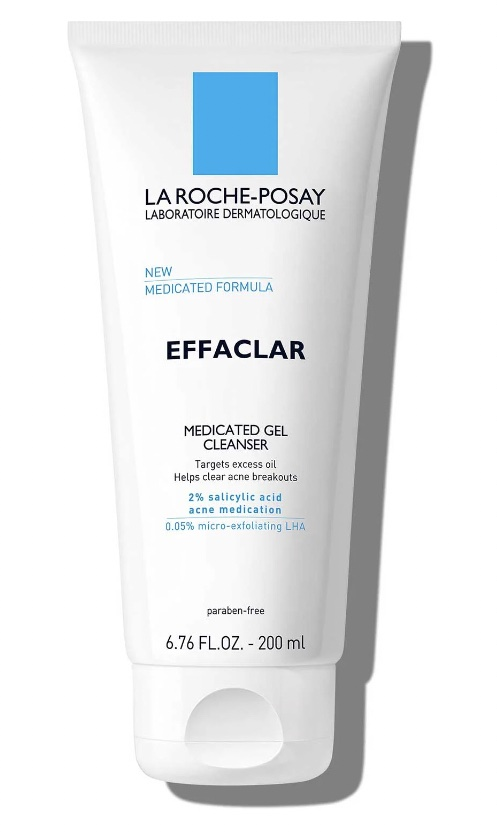

Step 2: The next step is toner! Some people say it's optinal, I visited a skin specialist and she said that not only is it important but if you have the right one it can help prevent acne. She gave me a toner made from Calendula extract. Because it was from her own brand which is not in stores i found the next best one. I would also like to say that depending on your acne type toner might not be the best option.
Step 4: Moisturizer Ok so technically eye cream would come next and if you use that great, I however dont really think it works so i skip that. Also being a teenager the best way to reduce under eye cyrcles is sleep, and ice. Back to the moisturizer this step is crucial even if you have acne and oily skin. For the longest time I thought that becUSE I have oily skin that I can skip moisterizer, but that actually causes your pores to profduce more oil. Even if you have acne chancds are you use lots of exfoliants and drying agents so keeping your skin barrier healthy is important. This is not to say that all skin types can use the samemoisturizer and if you have oily skin you will probably want a thin cream for night and a good sunscreen thats non comobojenic. My favorite is the Elemis lightwight moisturizer, and for my sunscreen all of the facial sunscreens form Elta MD.
